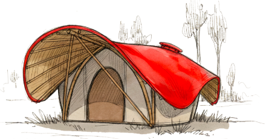

Terra + Bamboo
La mejor arquitectura
no domina el paisaje.
Forma parte de él.
Estudio de arquitectura y construcción en bambú y tierra · Colombia
Cuéntanos tu proyectoTaller en el guadual · vista de dron
¿Quiénes somos?
 Santiago MontoyaArquitecto
Santiago MontoyaArquitecto José Luis ChalcoArquitecto
José Luis ChalcoArquitecto
TEBOO (Terra Bamboo) es un estudio de arquitectura y construcción que nace de la conexión profunda con la naturaleza y el deseo de construir de manera más consciente y responsable.
Nos especializamos en bioarquitectura y en el uso de materiales naturales como la guadua y la tierra, combinando saberes ancestrales con herramientas digitales de diseño.
Creemos que cada proyecto debe integrarse con su entorno, respetar los ecosistemas y reflejar la identidad de quienes lo habitan. Por eso desarrollamos soluciones arquitectónicas sostenibles, funcionales y estéticamente armónicas.
- Guadua y tierra
- Saberes ancestrales
- Diseño digital
Nuestros servicios
- 01
Diseño arquitectónico sostenible
Proyectos residenciales, turísticos, educativos y comunitarios con enfoque ecológico y bioclimático.
- 02
Construcción con materiales naturales
Ejecución de obras en guadua, tierra (adobe, bahareque, tapia, entre otros) y técnicas mixtas.
- 03
Consultoría técnica y diseño estructural en guadua
Acompañamiento en todas las fases del proyecto, desde el diseño hasta la ejecución.
- 04
Formación y talleres prácticos
Capacitaciones en construcción sostenible, con énfasis en bambú y tierra.
Especialistas en arquitectura sostenible, diseño paramétrico y construcción con bambú, tierra y materiales naturales.
Desde viviendas hasta eco-hoteles y desarrollos turísticos, acompañamos cada proyecto desde la idea inicial hasta la construcción.


Cómo trabajamos
- 01
Materiales vivos
Bambú, tierra y recursos locales seleccionados por su comportamiento estructural, eficiencia ambiental y belleza natural.
- 02
Precisión digital
Diseño paramétrico, modelado BIM y visualización 3D para optimizar cada decisión antes de construir.
- 03
Impacto positivo
Arquitectura que reduce emisiones, aprovecha los recursos del lugar y crea espacios preparados para durar generaciones.
- 04
Aprender construyendo
Compartir conocimiento también es construir. Organizamos talleres, desarrollamos maquetas de precisión y colaboramos con comunidades para fortalecer capacidades locales.
Del boceto a la obra
Cada forma empieza observando algo: un grano de café, un cocuyo, el caparazón de una tortuga.



Portafolio
Momentos de obra
Arrastra para recorrer, haz clic para ampliar.
Servicios
Servicios integrales para una arquitectura sostenible de alto nivel.
- Masterplanning & Eco Resorts
- Diseñamos experiencias completas para turismo sostenible, desde el planeamiento territorial hasta el último detalle arquitectónico.
- Arquitectura residencial
- Casas únicas adaptadas al clima, al paisaje y al estilo de vida de cada cliente.
- Diseño paramétrico y visualización 3D
- Transformamos ideas complejas en proyectos precisos mediante herramientas digitales avanzadas.
- Construcción especializada
- Ejecutamos proyectos con altos estándares técnicos en bambú, tierra y otros sistemas constructivos sostenibles.

Formaciones
Compartimos conocimiento para transformar la forma de construir.
A través de workshops, investigaciones y recursos técnicos buscamos impulsar una nueva generación de arquitectos y constructores especializados en bioarquitectura.
- Talleres de bioconstrucción con guadua, en obra y con comunidades.
- Taller de maquetas de precisión.
Contacto
Construyamos algo que deje una huella positiva.
Cuéntanos tu idea. Estaremos encantados de ayudarte a convertirla en un proyecto sostenible, funcional y duradero.
Iniciar conversación ahora- WhatsApp +57 320 481 5569
- Correo teboo.arch@gmail.com
- Instagram @teboo_arch